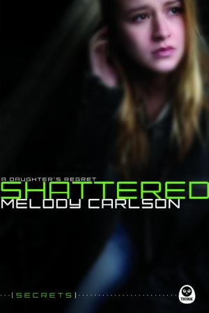
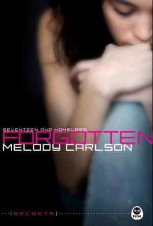

Newsletters and facebook and twitter, oh my! At the moment, I feel a little overwhelmed with social networking and book promotion etc.—like I’m barely keeping up. There’s so much to do related to book publishing that I sometimes just scratch my head and wonder…whatever happened to the good ol' days when a writer simply wrote books?
Yet at the same time, I realize we live in a new generation—the connected generation—and because I really do care about my readers, I do want to stay connected. And I love it when my readers write to me, and I try to respond to as many letters as possible. Consequently, I have to juggle my time between staying connected and continuing to write books…and to hopefully still have a life.
And then I remember that the mere process of writing stories is what really connects me to my readers in the first place. So it would seem that writing books should remain my top priority, right? Which is probably why I use my writing as my favorite excuse for getting behind in things like social networking and staying “connected.” Do I sound conflicted? Well, duh…as one of my teen characters might say.
So that brings me back to this whole idea of staying connected. Is it possible that in this generation of hyper-connectivity that some of us (okay, many of us) are over-connected? I wonder about those I see in restaurants, people who appear to be out with loved ones, and yet they seem distracted, checking their phones and texting. I also wonder about families…where one parent excuses himself to “work” on his computer while the others are still sitting around the table. Or a teen who is unable hear what her mom is saying because she can’t peel her eyes off of her iPhone. What is wrong with these pictures?
What happens if our compulsion to remain “connected” ends up disconnecting us? What if cell phones, computers, and e-tchnology just separate us from the ones we really need to connect with? What happens if our connectedness is really just an electronic form of social isolation? What if our addiction to e-devices makes us unable to carry on a real physical conversation with a loved one? What if it’s time to disconnect a little? For me this is food for thought.
Okay, this is my soapbox and I can jump on it if I want to...since this is my website (insert chuckle here). But I’m really going to give this connectivity thing some thought. And you might even hear me writing about it in one of my books. Because that’s what I do…I write stories to connect. But then I turn off my computer and exit my office and I really do try to connect. Because otherwise I wouldn’t have much to write about.
So I wish you the best…and I wish you a little less e-connected...like consider giving up texting in exchange for a face-to-face encounter. Most of all I wish you a deep and lasting connection with the Great Connector who longs to connect with all of us.
Blessings!
Many of Melody's books are available for purchase online or in stores like Barnes and Noble.
In print and Nook eReader format at Barnes and Noble
For the Kindle eBook reader, as well as standard soft and hardcover print books at Amazon.com
NEW!
|
SHATTERED Everybody does it—sneaks out of the house now and then. It's harmless enough, right? Not this time. Cleo Neilson faces the chilling consequences of her actions. Now she has a secret and can’t tell anyone, and it’s breaking her heart. As Cleo fights through her grief and guilt, she learns about faith in God and forgiveness through him. As teenage girls read Cleo's journey, they too will learn the value of having faith and receiving forgiveness as well as just how dangerous it really is to keep a secret. |
 |
|
RENDEZVOUS Lost in translation? Having learned some hard lessons about the costs of recklessness and fame, sisters Paige and Erin Forrester feel ready to take their fashion-focused TV show on location to Paris. Unfortunately, it doesn't take long for many of their good intentions to get lost in translation. An unplanned week of filming at runway model Eliza Wilton's family estate leads to romance, jealousy, and surprises. With cameras rolling, both girls have to be careful or the future of On the Runway could end up as wobbly as Paige's stiletto heels. |
|
|
GLAMOUR Sink or swim? Paige's engagement to designer Dylan Marceau shocks the fashion world. Although Paige appears to be happy, Erin wonders if it's true love or just a desire for attention and publicity. As Paige's love life takes off, Erin is feeling pressure from Blake to take their friendship to a romantic level. But is she ready? These two very different sisters still have one thing in common---their fashion TV show and all the drama that comes along with it. As they prepare for a trip to film in the Bahamas, the Forrester sisters discover that paradise isn't all it's cracked up to be. Can they do the right thing in tough situations---and the right thing for each another---in a business that often encourages the worst? |
 |
|
NEVER BEEN KISSED New School = New Chance for That First Kiss Summer is ending, and for once that doesn't seem like such a bad thing to Elise. She's hoping that starting fresh at a new high school will turn her first-kiss prospects around. New guys, new friends, and a new lease on life. What she wasn't counting on was all the new pressure--to hang with the right crowd, wear the right clothes, and date the right guy. Just when it seems she's on top of the world, everything comes crashing down. Could one bad choice derail her future? |
 |
|
FORGOTTEN 17 and Homeless With absent parents, overdue rent, and no one to turn to, Adele is forced into the hard, cold world of homelessness. While striving to maintain the pretense of a normal life, Adele attempts to finish high school, all the while concealing her secret. But is she strong enough to keep up the act? Forgotten will propel teen readers into a world where promises are broken, life is not fair, and challenges seem unbearable, while still offering assurance that solid faith, loyal friends, and a persistent spirit will prevail. |
 |
|
LOVE FINDS YOU IN MARTHA'S VINEYARD Artist Waverly Brennan wants a fresh start.
She gets her chance when her ever-quirky mother calls to say she's purchased a gallery in
Martha's Vineyard and would love Waverly's help setting it up. Enticed
by visions of running a classy art gallery, Waverly arrives in Vineyard
Haven only to discover that her mother's new business venture isn't
quite what Waverly had envisioned. Stuck on the island for the summer,
Waverly attempts to make the best of it. She puts her creativity to
work and soon finds other motivations to stick around such as Blake
Erikson and his charming daughter. |
 |